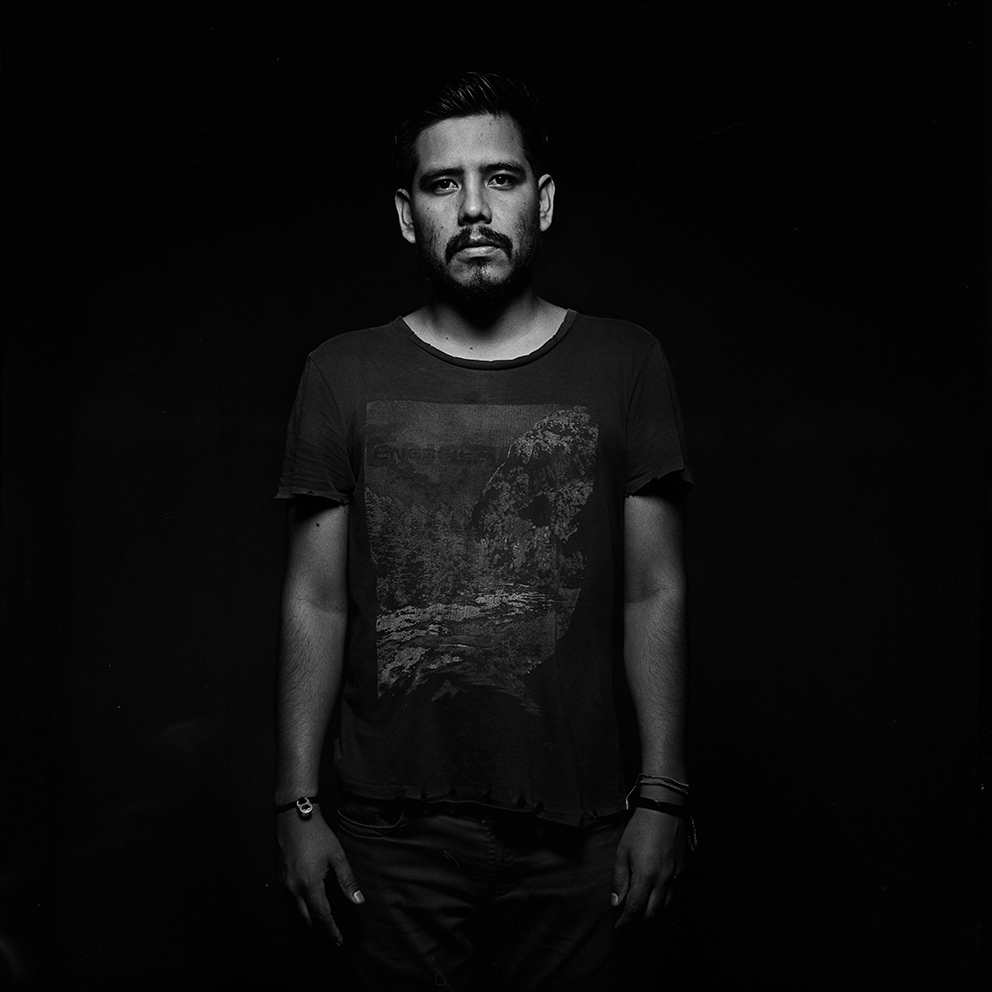
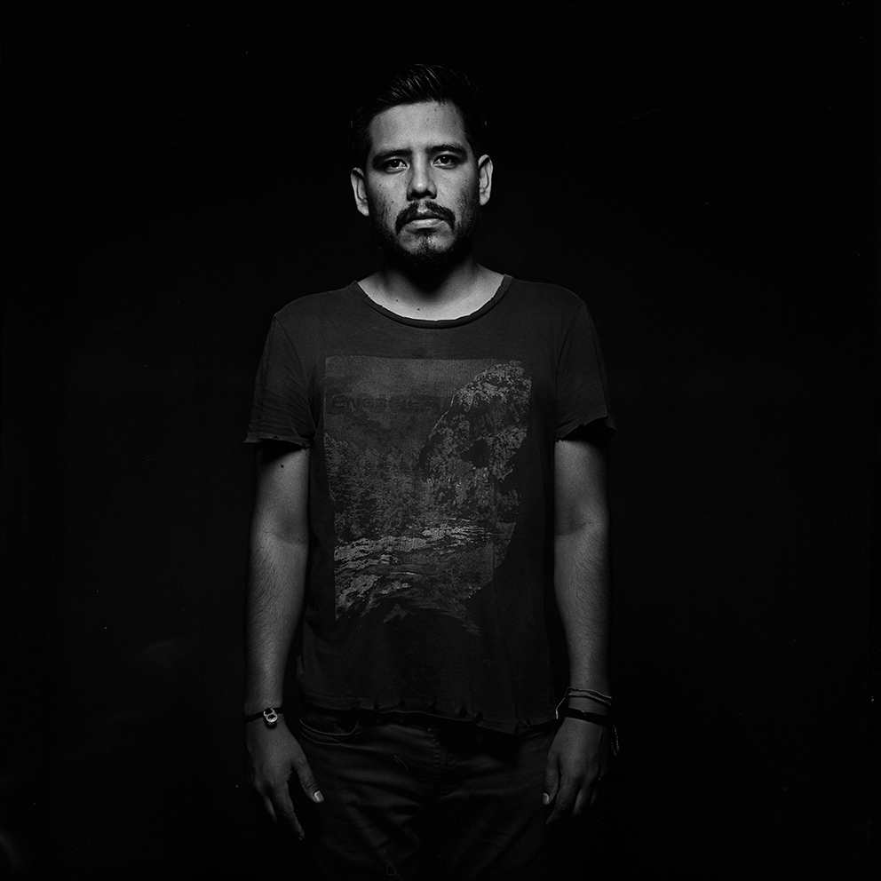

INICIO
OBRAS
ARTISTAS
NOSOTROS
CONTACTO
 

Samuel Chambi
Nace en Lima, Perú en 1983, estudia la carrera de fotografía en el Centro de la imagen.
Ha participado en diversas exposiciones dentro y fuera del Perú, como en el FOLA (Buenos Aires, Argentina) o Galería el Museo ( Bogota, Colombia).
El 2014 ganó el Salón de fotografía organizado por el ICPNA y ese mismo año fue mención honrosa del premio Repsol, el 2019 quedó finalista de pasaporte para un artista.
Ha sido profesor en la Escuela nacional de bellas artes y en el Centro de la imagen.
Actualmente divide su tiempo entre la co - dirección de FIsura Galería, su trabajo personal de artista y la enseñanza.
EXPOSICIONES COLECTIVAS
2019
Cámara Lucida – Museo Mario Testino (MATE) Lima
2019
Entropía generacional – LAC galería. Lima
2019
Ficción vs mentira / post verdad – Alianza francesa. Lima
2018
Mundo Futbol, FOLA. Buenos Aires - Argentina
2017
Narraciones fragmentarias, Centro Cultural Euroidiomas. Lima (bipersonal)
2015
Tansversal, Galeria el museo. Bogota Colombia
2015
Parc. MAC. Lima
2014
ComparArt. Museo de la Nación. Lima
2014
El Peregrino, una mirada fotográfica. Centro Cultural de España. Lima
2014
Limaphoto. Centro de la Imagen. Lima
2014
Artlima Escuela Militar de Chorillos. Lima
2013
Limaphoto2013. Centro de la Imagen. Lima
2012
Limaphoto2012. Centro de la Imagen. Lima
2012
El Show de Diana. 1era Bienal de Fotografía. Lima
EXPOSICIONES INDIVIDUALES
2017
No ficción (No documental) : El ojo ajeno, Lima
2015
Principios de Fotografía. El Ojo Ajeno. Lima
2010
Mirada Stereo. Centro Cultural Euroidiomas. Lima
DISTINCIONES
2019
Finalista. Pasaporte para un artista – alianza francesa
2015
Ganador en la categoría MUNDO VERDE, CelulArte
2014
Primer puesto. 4to Salón de Fotografía del ICPNA
2014
Mención Honrosa. Premio Repsol Limaphoto
2012
Finalista. Premio Repsol Limaphoto
Ver Obras